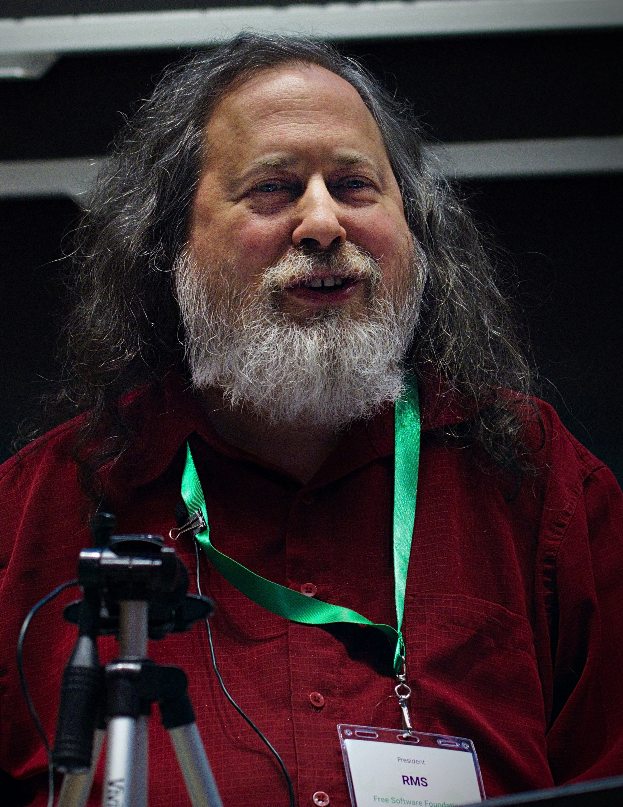

3... 2... 1...
Who are we!
Identify this person

What is Free Software?
"Free Software" means Softwarethat respects users' freedom and community.
When and How - FSF
Which ultimately lead to the spread of Free and Open Source Software
FREE in FOSS
Free as in Freedom, to do all sorts of things with it.
മലയാളത്തിൽ ഇതിനെ സ്വതന്ത്ര സോഫ്റ്റ്വെയർ എന്ന് പറയുന്നു.
then what is open source?
" Denoting software for which the original source code is made freely available and may be redistributed and modified. "
Advantages of FOSS
Free
Source Code is visible to anyone
It is also availble to modify
Open source software fosters innovation
It is also a bit more secure
The four essential freedoms
The freedom to run the program as you wish, for any purpose (freedom 0).
The freedom to study how the program works, and change it so it does your computing as you wish (freedom 1). Access to the source code is a precondition for this.
The freedom to redistribute copies so you can help others (freedom 2).
The freedom to distribute copies of your modified versions to others (freedom 3). By doing this you can give the whole community a chance to benefit from your changes. Access to the source code is a precondition for this.
Difference b/w Proprietary and OSS
OSS
Proprietary
S/W devolped and tested through open collabration
S/W that is solely owned by an organization or an individual
Anyone with academic knowledge can access, modify, inspect and redistribute the source code.
Only the owner or publisher who holds the legal property rights of the source code can access it.
The project is managed by an open source community of developers and programmers.
It is managed by a closed group of individuals or team that developed it.
It provides better flexibility which means more freedom which encourages innovation.
There is a very limited scope of innovation with the restrictions and all.
Example: Linux Kernel, Various Distros which focuses on foss philosophy, Mozilla products, etc.
Example: Microsoft OSes, Adobe products, etc.
Why OSS isn't FOSS?
Licensing...
Some Examples for FOSS
Linux Kernel
Mozilla Firefox
Android Custom Roms(Lineage OS)
BASH
Various frameworks, for eg: ReactJs, VueJs, Django
99% of the programming Languages: C, C++, Python, Js, Kotlin etc.
what foss isn't / myths
Difficult
Commands are everything
Good alternatives are not available
Can't run games!!!
It's for servers and devs, not your avg users
No support
FOSS is monotonous - copy cat
Less security
Free means low quality
foss development model/cycle
why you need foss? (in your syllabus)
Different kinds of IDEs
ngSPICE
SPICE software almost used commomly(Circuit sym)
KiCad EDA
Used for PCB design, alternative to Eagle, Proteus etc.
Magic
VLSI Layout s/w
GNU Radio
Singal processing using blocks or SDRs
GNU Octave
Alternative to MATLAB and follows almost same syntax
Scilab
Alternative to MATLAB
Fritzing
PCB design, had option to use breadboard (I havent seen this in commercial softwares)
GHDL
VHDL ported for linux systems that can be run from the command line no need for license or Xilinx ISE
Another project by IITB, this would be more useful for IC students
https://openplc.fossee.in/
This is an entire suite of EDA tools developed at IITBombay
https://esim.fossee.in/
GTK wave
Waveform viewer for Digital applications
And much more...
giving back to community imporves your skillset!!!
what makes foss foss?
"FOSS licenses" There are a plethora of licenses for FOSS.